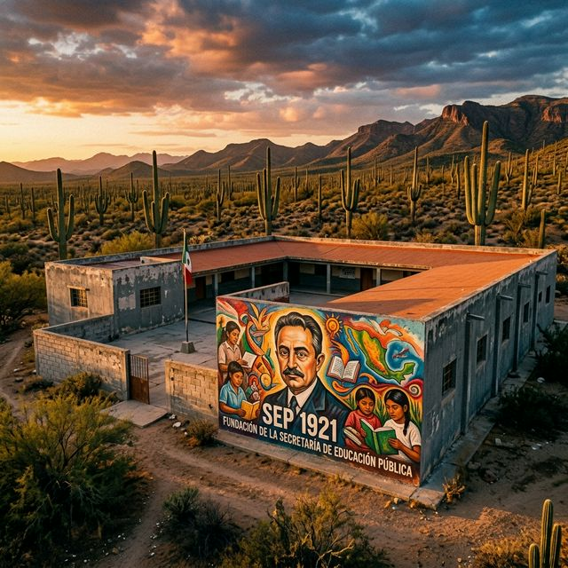
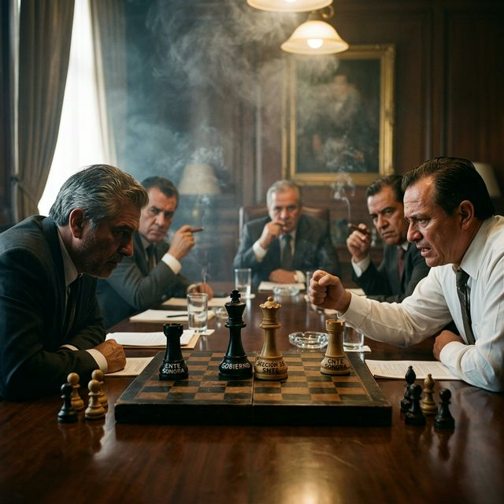
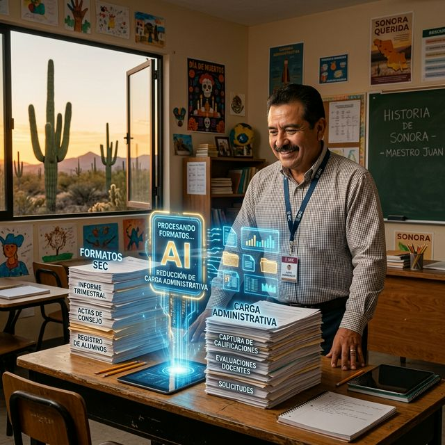
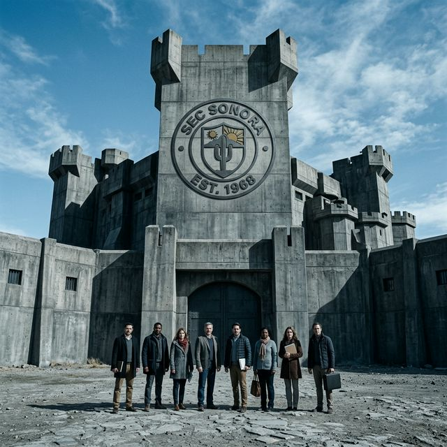
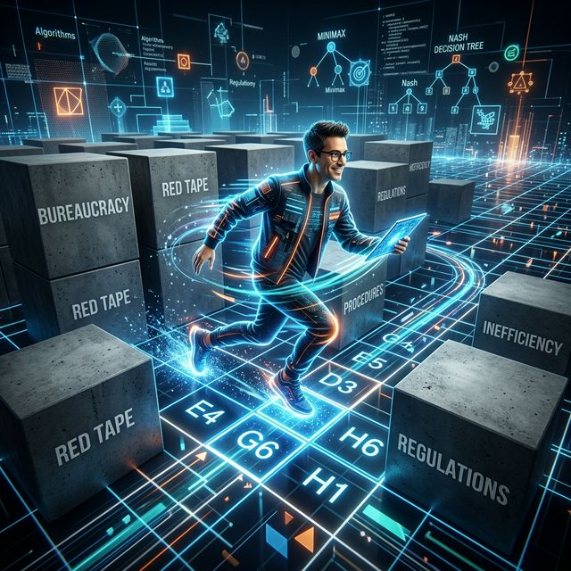
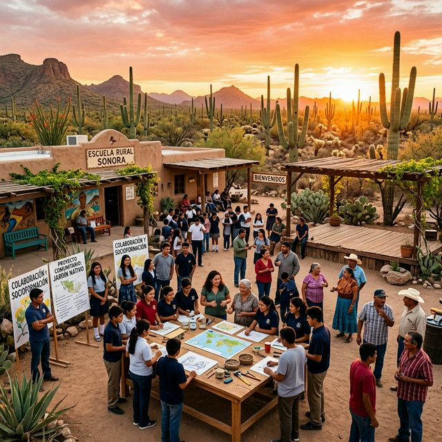
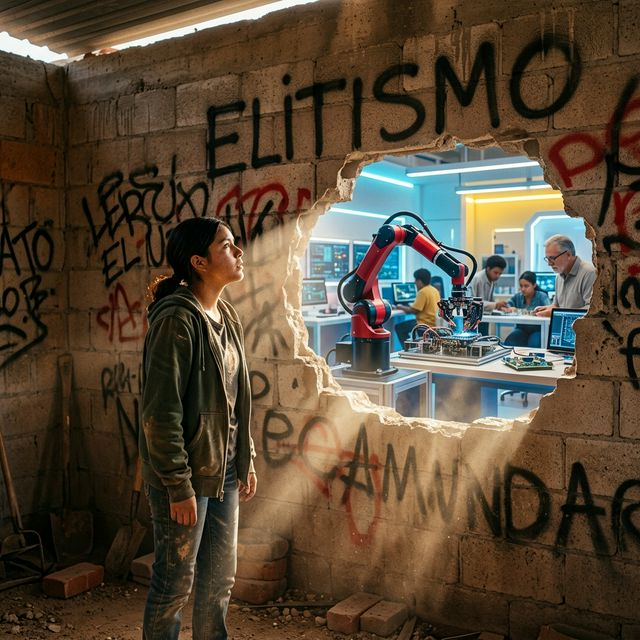

Bienvenido al Tomo Final de la serie. Hoy unimos la historia de Vasconcelos con la potencia de la IA para trazar el horizonte definitivo del magisterio sonorense.

A un siglo de la fundación de la SEP, el ideal de José Vasconcelos sigue vivo. Pero para que florezca en Sonora, necesitamos una nueva alquimia táctica que rompa el control administrativo actual.

Presidencia, SEP, SNTE y CNTE. En este choque de fuerzas racionales, el Magisterio Sonorense surge como el actor impredecible capaz de fracturar los pactos de las cúpulas.
El discurso oficial habla de comunidad, pero la realidad burocrática sonorense exige control. Convertir la autonomía curricular en praxis de resistencia es nuestro mayor desafío intelectual.
Ni asimilación ni aislamiento. El MS aplica una estrategia de amnesia táctica y firmeza ideológica para adquirir un poder de negociación desproporcionado ante las dirigencias tradicionales.

Hackear la carga administrativa mediante la tecnología. Al recuperar nuestro activo más valioso, el tiempo, el docente vuelve a ser el motor del análisis crítico y la interacción humana real.

La SEC-Sonora y la Sección 28 operan en un equilibrio estático defensivo. Nuestra contrainteligencia docente anticipa cada maniobra destinada a asimilar nuestras innovaciones.

Alternando tácticas de cumplimiento perfecto con innovaciones fuera del manual. La inconsistencia estratégica del MS genera un vacío de control que la burocracia no puede llenar.

Vincular la educación con los propósitos comunes de Sonora. La escuela deja de ser una fábrica cerrada para volverse un refugio social protegido contra la ignorancia impuesta.

Democratizar el acceso al código y al pensamiento crítico. Desmantelar la fábrica significa que la educación sea un derecho conquistado, no un privilegio administrado por las élites.
Concluimos el viaje de los cinco tomos. Con la historia como brújula y la estrategia como motor, el magisterio sonorense asoma a un horizonte de libertad definitiva. ¡Adelante!